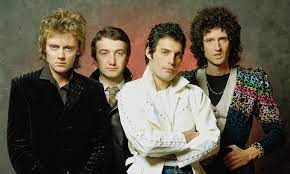

Queen foi uma banda britânica de rock, fundada em 1970 e ativa, sob sua formação clássica, até 1991.

Os seus dois primeiros álbuns alcançaram pouco sucesso, até que ganhou popularidade internacional por meio de Sheer Heart Attack (1974) e, principalmente, por A Night at the Opera (1975), cujos singles "Bohemian Rhapsody" e "You're My Best Friend" alcançaram bons desempenhos.
Em 1985, o conjunto realizou uma das suas performances mais memoráveis no evento Live Aid, e em 1986 a última turnê. Em 1987, o vocalista Freddie Mercury contraiu o vírus do HIV. Com isso, a banda continuou produzindo trabalhos que se tornaram os últimos registros em vida de seu cantor.